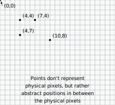
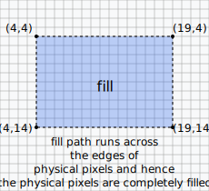
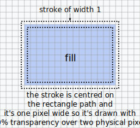
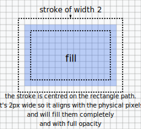

Canvas crispness tests
Preamble
The coordinate system of Canvas is not quite like in the plain raster model where (0,0) is the 2-dimensions square lit by the top left pixel.
Rather, (0,0) rapresents a zero-dimensions abstract point at the very top left corner of the canvas i.e. the top left corner of the top left pixel.

so if you draw a rect like rect(4,4,15,10), Canvas will set a path, which runs along the grid in between pixels. fill() will then fill the
inside of the path, and the fill with have crisp borders, as all pixels inside of it are fully covered and fully on.

if you then do a stroke() (with default lineWidth of 1), the stroke will be of width 1 and will be centered on the path. So it won't be crisp,
as it will cover 2 half-pixels all along the path. The two half-pixels are of course rendered as two 50% opacity (and hence grey) pixels. So while
the border of the fill is crisp, the border of the stroke is blurry - and it will be crisp for all odd lineWidths.

if you instead do a stroke() with lineWidth of 2, the stroke will cover 2 full pixels completely, all along the path. The two half-pixels are
completely covered and opaque, hence the stroke will be crisp - and it will be crisp for all even lineWidths.

Examples
The following examples flesh out the same situation for more cases and using different commands. It turns out that (with great relief) all the
different commands for drawing rectangle fills and strokes all produce the same results.